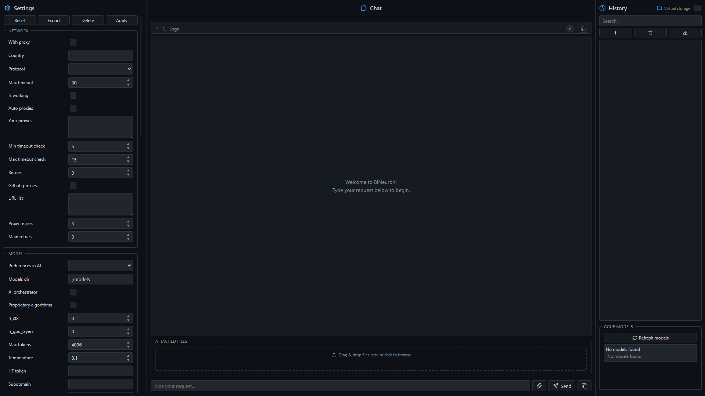

The safest local AI for your code
BiNeuron runs entirely on your machine by default. Your files, prompts, translations, and chat history never leave your computer. No telemetry, no tracking, no forced network calls. Cloud is opt-in only, and only when you enable it.

Why BiNeuron is the safest
A local-first AI assistant where every design decision prioritizes security, privacy, and control. Nothing reaches the network unless you say so.
100% Local by Default
GGUF models run entirely on your machine. No API keys, no accounts, no telemetry. Nothing leaves your computer unless you explicitly enable cloud mode.
No Telemetry, No Trackers
Zero analytics, zero tracking pixels, zero background pings. BiNeuron runs perfectly with the network cable unplugged.
Sandboxed File Access
Files are only read when you point BiNeuron at them. Automatic editing and deletion are off by default and must be enabled per session.
Local OCR and Parsing
Extracts text from PDF, DOCX, ODF, PPTX, XLSX, EPUB, MOBI, FB2 and images locally via EasyOCR, or through your own private DeepSeek OCR key.
Virtual Storage, No Uploads
Point BiNeuron at a folder. Files are read directly from your disk into the analysis context. Nothing is copied, uploaded, or cached outside your machine.
Opt-in Cloud, Never Automatic
Cloud inference through LiteLLM is strictly manual. Nothing is sent to any provider until you enter a cloud model name and your own API key.
Inspect Everything Before Sending
Preview the full system prompt, translated request, file context, and attached file list. See exactly what would leave your machine, byte for byte.
Encrypted Chat History
Protect conversations with a master password using Fernet and PBKDF2 with 200,000 iterations. Three wrong attempts wipe the key permanently.
Anonymize and Filter
Strip personal data with Microsoft Presidio and filter sensitive content before anything reaches a model. Both filters run entirely on your machine.
No Forced Network Calls
Proxies, mirrors, and network access are entirely under your control. BiNeuron never contacts any server unless you explicitly allow it.
Fully Offline Translation
Use Google Translate, DeepL, or fully offline ArgosTranslate. ArgosTranslate mode makes zero network requests at all.
Hardened Interface
Master password lock, opt-in file editing, explicit cloud fallback, and 24 dark themes with no external fonts, no CDN, and no third-party assets.
Download BiNeuron
Free and open source. No accounts, no sign-ups, no telemetry. Verify the code, build it yourself, and run a local AI on your own machine in under five minutes.
Every release is built from source and signed. Choose the format that fits your workflow: a one-click installer for Windows, a native package for macOS, or a portable AppImage for Linux.
If a file does not download or you get an error, open the official releases page on GitHub and pick the right build for your platform manually.
Open releases on GitHub